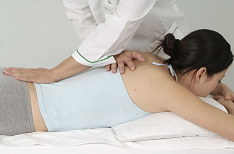

Optimized wellness with ancient healing arts TM
However, there is much more to it. As all internal breathing exercise known as "qi gong" or "chi gong", the real emphasize is on the coordination and integration of mind, body, breathing and movements. It is calm while moving, and it moves with calmness.
